The same figure from two very different programs.
Atlas draws what your code is: the places where data rests and the functions between them. You and your coding agent look at the same picture, and you can point at it.

fetch sunspot counts from the web, keep the CSV, clean, smooth, draw: written twice in Python, once sloppy and once typed and elegant


Both reach the same places: the web, the raw CSV, the figure. Inside they part. In the sloppy script every step reads and changes one global, Global(sunspots.df), and nothing is handed from step to step. In the typed one the CSV stands between download and load, a DataFrame goes from step to step, and the command names every file. A red dot is a question Atlas asks the author. Open the typed one in Atlas and click around: it is a live picture.
Port it, and see whether the design survived.
Code gets rewritten in another language, more and more often by an agent. Tests tell you the port makes the same figure; they do not tell you the design survived. Atlas reads Python, Rust and TypeScript into the same picture, so a step gone or a place moved shows.
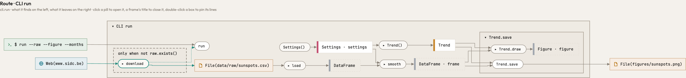
Python, typed. A pandas DataFrame is handed from step to step, and matplotlib draws the figure. Open the live picture and click around →
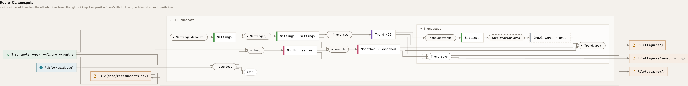
Rust, ported. The same web, the same CSV, the same figure, and the same steps between them. What differs are the libraries: where Python hands a DataFrame along, Rust hands a list of Month records, and where matplotlib draws the figure, Rust draws into a DrawingArea on the file. Open the live picture and click around →
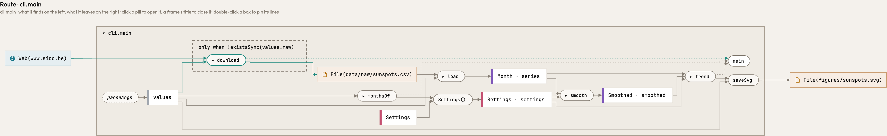
TypeScript, ported. The same shape again: parseArgs reads the command line, download runs only when the CSV is missing, and the figure is written as an SVG. Open the live picture and click around →
See what a change did, without reading the diff.
A pipeline grows one commit at a time: the download, the load, the first figure, the smoothing, a filter, and last the maxima of the solar cycles. Pick any two commits and Atlas draws them as one picture. Here the fifth against the sixth: the new path from the smoothed months to a second figure is filled green, and nothing else moved.
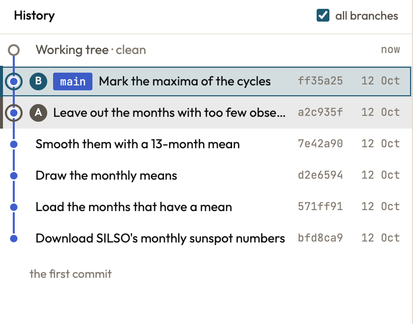

added removed changed: its own arrows differ
Say exactly what you mean: point at it.
You chat with your agent where you always do. Atlas gives it tools, and the picture is where you both look. The agent takes your page to a view and points; you alt-click a box to leave a note on it; the agent answers on that same box. The chat is yours; the answer shows up in Atlas.
Connect Atlas to your agent once
claude mcp add --scope user atlas -- atlas mcp
Then run atlas serve in a repository and open the page it prints. On the left of each step is what you see in Atlas; on the right is what your agent calls and what Atlas answers.
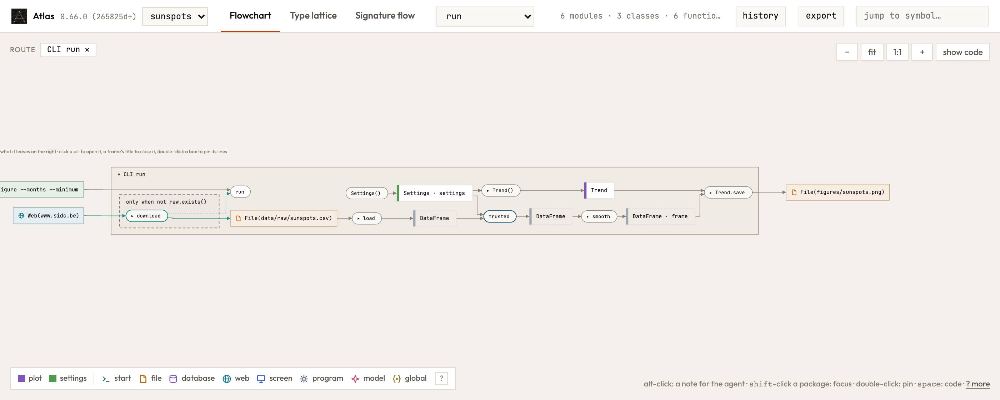
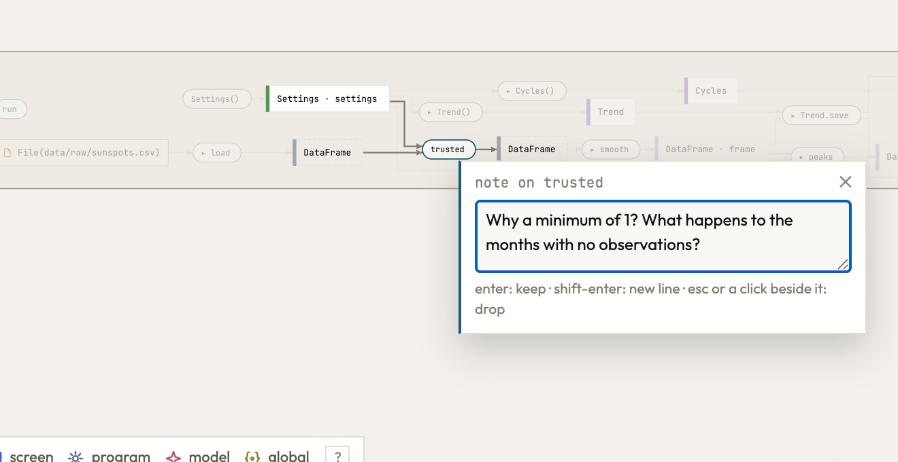
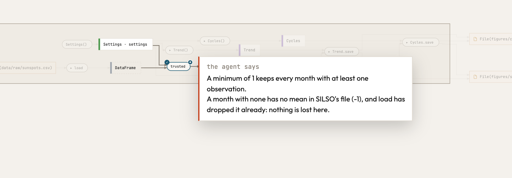
Design the next feature before you write it.
Ask your agent for a change and it shows you the change, not a description of it: a vision, a sketch drawn beside the code as it is, where only what the code would add is green. When you say yes, the sketch goes into your code as a prophecy, dotted purple: the same shape, now real code that Atlas reads with real types, and a list of what is left to build. Write the bodies, remove the marker, and the dots become solid.
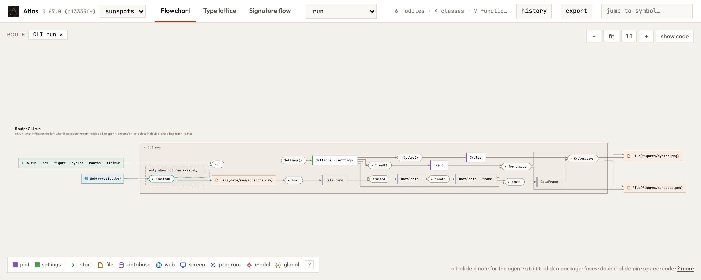
The route as it stands. You ask your agent: keep the smoothed months in a file.
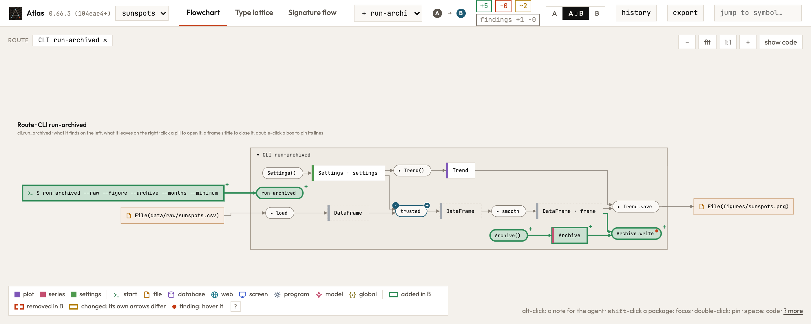
A sketch, nothing written in your files. Atlas reads the sketch as it reads code, so the picture is drawn with real types; it lives in the agent's request and is gone when it is decided or retracted. Only what the code would add is green: the Archive, its write step and the new route. What it reuses stays plain.
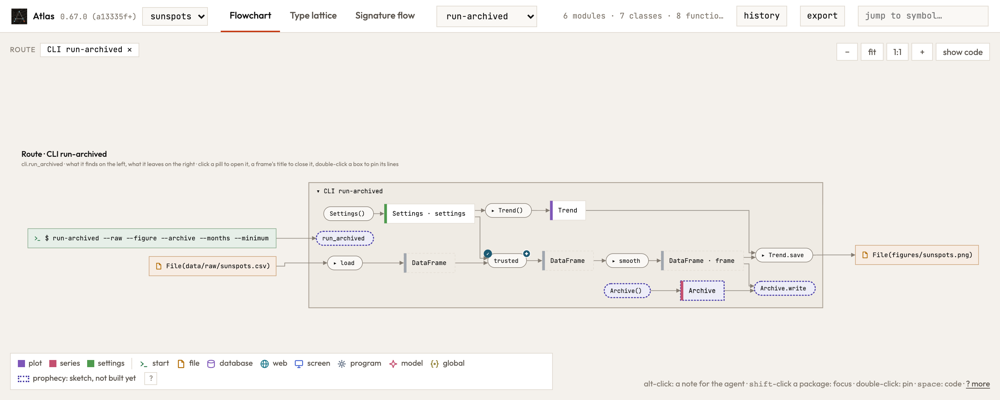
Decided: the same sketch, now written in your files. The one thing that is new is the marker, the purple line: it says the code is not built yet, so Atlas draws it dotted and does not ask about its empty bodies. supersedes says what the new route replaces; sealed ties a piece to a GitHub issue it waits on.
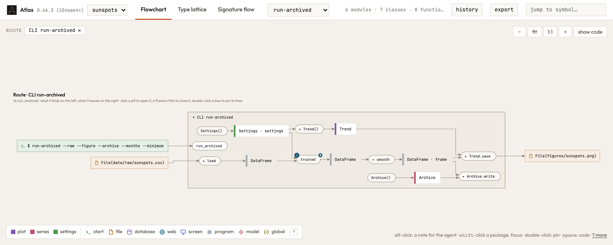
Built. The bodies are written and the markers are gone: the same route, solid. Ask Atlas what is left, before and after:
Your README draws itself.
Every push redraws the picture of your code in your README. It runs on GitHub, so there is nothing to install on your laptop. How to set it up →
git push→atlas view→README.md
SOL
Sunspot counts since 1749: fetched, smoothed and drawn.
drawn by Atlas from 3f9c2e1, the last push
Why it holds together: the mathematics of your code.
Mathematics is a language that allows you to make things consistent. Best practices in coding are consistent, so it makes sense to view your computer code through a mathematical perspective. Because we can turn the mathematics of the code into a visual, you can literally see the consistency of your code, if you followed best practices. This is independent of the language you use: every program is drawn by the same mathematical rules.
What is inside
Category theory
- A category of types
- Types are objects, functions are arrows, call order is composition. A route is a composite from an entry point to a place.
- Sum types are coproducts
- Taken apart where they arise.
- Lawful lenses
- A class that writes a place and reads it back is a lens on that place. Atlas asks the put-get law at the level of types: what goes in as a
Graphcomes back as aGraph.
Topology
- Zooming out glues, a filter is a fiber
- Zooming out glues each family of types into one point: a quotient. Keeping to one route is the fiber over it, the part that lies above one point. Gluing and taking a fiber don't commute, so the order of a view is meaning.
- Fine and coarse
- A zoom level divides the nodes into boxes, and each such division is a topology on them. Zooming in and out moves between finer and coarser ones, so the picture stays the same picture.
Type theory
- Effects in the type
- A function's domain is its parameters plus what it reads; its codomain is what it returns plus what it writes, sends or runs, as in a type-and-effect system. Files, tables and URLs are objects like any other.
- Subtypes keep their promise
- An override does what its base says (behavioural subtyping, Liskov).
Graph theory
- A step and its reach
- A function's own arrow and everything it reaches are different quantities, never merged.
Every notion, with where it lives in Atlas: the mathematics.
Try it on your own code.
One binary. Your code stays on your machine.
macOS and Linux
curl -fsSL https://raw.githubusercontent.com/raoulg/atlas/main/install.sh | sh
Windows, in PowerShell
irm https://raw.githubusercontent.com/raoulg/atlas/main/install.ps1 | iex
From source, with a Rust toolchain
cargo install --locked --git https://github.com/raoulg/atlas atlas
atlas servethe picture of the repository you are in, to work in with your agentatlas viewthe same picture as one HTML file, to keep or sendatlas checkwhere the code and eleven design principles disagreeatlas changeswhat your edit did to the routesatlas mcpthe picture for your coding agentThe nightly build, from next
ATLAS_CHANNEL=nightly sh -c "$(curl -fsSL https://raw.githubusercontent.com/raoulg/atlas/next/install.sh)"
Your coding agent, once for every project
claude mcp add --scope user atlas -- atlas mcp codex mcp add atlas -- "$(command -v atlas)" mcp
Claude Code's --scope user makes Atlas available in every project. Codex keeps its servers in one configuration for all projects and starts them without your shell's PATH, so it is given the binary's full path, which command -v atlas prints. Then atlas serve in any repository is all it takes: the agent's atlas mcp works on the repository the agent runs in, and shares the page with you.